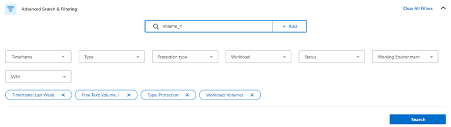
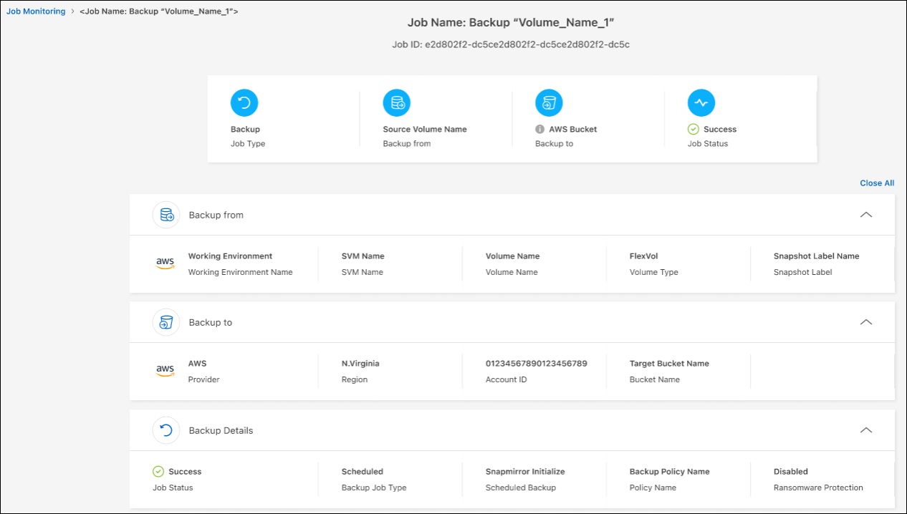

版本資訊
版本資訊
監控備份與還原工作的狀態
 建議變更
建議變更
您可以監控本機快照、複製和備份的狀態、以及您所起始的物件儲存工作、以及還原您所起始的工作。您可以看到已完成、正在進行或失敗的工作、以便診斷和修正問題。使用 BlueXP 通知中心、您可以透過電子郵件傳送通知、即使您未登入系統、也能得知重要的系統活動。使用 BlueXP 時間軸、您可以查看透過 UI 或 API 啟動的所有動作詳細資料。
在工作監控器上檢視工作狀態
您可以在 * 工作監控 * 標籤中檢視所有 Snapshot 、複寫、備份到物件儲存、還原作業及其目前狀態的清單。這包括 Cloud Volumes ONTAP 、內部部署 ONTAP 、應用程式、虛擬機器和 Kubernetes 系統的作業。每個作業或工作都有唯一的ID和狀態。
狀態可以是：
-
成功
-
進行中
-
已佇列
-
警告
-
失敗
您可在「工作監控」標籤中找到從 BlueXP 備份和還原 UI 及 API 啟動的快照、複製、備份到物件儲存和還原作業。

|
如果您已將 ONTAP 系統升級至 9.13.x 、但在「工作監控」中沒有看到持續排程的備份作業、則需要重新啟動 BlueXP 備份與還原服務。 "瞭解如何重新啟動 BlueXP 備份與還原"。 |
-
從BlueXP功能表中、選取* Protection > Backup and recovery *。
-
選取 * 工作監控 * 標籤。

此螢幕擷取畫面會顯示預設欄標題。
-
顯示其他欄（工作環境、 SVM 、使用者名稱、工作負載、原則名稱、 Snapshot Label ）、請選取
 。
。
搜尋並篩選工作清單
您可以使用多個篩選器來篩選「工作監控」頁面上的作業、例如原則、 Snapshot 標籤、作業類型（保護、還原、保留或其他）、以及保護類型（本機 Snapshot 、複寫或備份到雲端）。
根據預設、「工作監控」頁面會顯示過去 24 小時的保護和恢復工作。您可以使用時間範圍篩選器變更時間範圍。
-
選取 * 工作監控 * 標籤。
-
若要以不同方式排序結果、請選取每個欄標題、依狀態、開始時間、資源名稱等進行排序。
-
如果您正在尋找特定工作、請選取 * 進階搜尋與篩選 * 區域以開啟「搜尋」面板。
使用此面板輸入任意資源的自由文字搜尋、例如「 Volume 1 」或「 Application 3 」。您也可以根據下拉式功能表中的項目來篩選工作清單。

此螢幕擷取畫面顯示如何在「上週」中搜尋名為「 Volume_1 」的所有「 Volume 」「 Backup 」工作。
大部分篩選條件都是不言自明的。「工作負載」篩選器可讓您檢視下列類別中的工作：
-
Volume （ Cloud Volumes ONTAP 和內部部署 ONTAP Volume ）
-
應用程式
-
虛擬機器
-
Kubernetes

-
只有在您第一次選取「工作環境」時、才能在特定的「SVM」中搜尋資料。
-
只有在您選取「保護」的「類型」時、才能使用「保護類型」篩選器進行搜尋。
-
-
若要立即更新頁面、請選取
 按鈕。否則、此頁面會每 15 分鐘重新整理一次、以便您永遠看到最新的工作狀態結果。
按鈕。否則、此頁面會每 15 分鐘重新整理一次、以便您永遠看到最新的工作狀態結果。
檢視工作詳細資料
您可以檢視與特定已完成工作相對應的詳細資料。您可以以 JSON 格式匯出特定工作的詳細資料。
您可以檢視工作類型（排程或隨需）、 SnapMirror 備份類型（初始或定期）的開始和結束時間、持續時間、從工作環境傳輸到物件儲存的資料量、平均傳輸率、原則名稱、啟用保留鎖定、執行勒索軟體掃描等詳細資料。 保護來源詳細資料和保護目標詳細資料。
還原工作會顯示備份目標供應商（ Amazon Web Services 、 Microsoft Azure 、 Google Cloud 、內部部署）、 S3 儲存庫名稱、 SVM 名稱、來源 Volume 名稱、目的地 Volume 、 Snapshot 標籤、恢復的物件數、 檔案名稱、檔案大小、上次修改日期和完整檔案路徑。
-
選取 * 工作監控 * 標籤。
-
選取工作名稱。
-
選取「動作」功能表 然後選取 * 檢視詳細資料 * 。

-
展開每個區段以查看詳細資料。
將工作監控結果下載為報告
您可以在修改後、將「工作監控」主頁的內容下載為報告。BlueXP 備份與還原會產生並下載 .CSV 檔案、您可以視需要檢閱並傳送給其他群組。CSV檔案最多包含10、000列資料。
您可以從「工作監控詳細資料」資訊下載包含單一工作詳細資料的 JSON 檔案。
-
選取 * 工作監控 * 標籤。
-
若要下載所有工作的 CSV 檔案、請選取
 按鈕、並在您的下載目錄中找到檔案。
按鈕、並在您的下載目錄中找到檔案。 -
若要下載單一工作的 JSON 檔案、請選取「動作」功能表 對於作業、請選取 * 下載 JSON 檔案 * 、然後在您的下載目錄中找到檔案。
檢閱保留（備份生命週期）工作
監控保留（或 _ 備份生命週期 _ ）流程有助於您確保稽核完整性、責任歸屬及備份安全。為了協助您追蹤備份生命週期、您可能想要識別所有備份複本的到期日。
備份生命週期工作會追蹤所有已刪除的 Snapshot 複本、或是要刪除的佇列中的所有 Snapshot 複本。從 ONTAP 9.13 開始、您可以在「工作監控」頁面上查看所有稱為「保留」的工作類型。
「保留」工作類型會擷取在受 BlueXP 備份與還原保護的磁碟區上所起始的所有 Snapshot 刪除工作。
-
選取 * 工作監控 * 標籤。
-
選取 * 進階搜尋與篩選 * 區域以開啟「搜尋」面板。
-
選取「保留」作為工作類型。
檢閱 BlueXP 通知中心的備份與還原警示
BlueXP 通知中心會追蹤您已啟動的備份和還原工作進度、以便您確認作業是否成功。
除了在通知中心中檢視警示外、您還可以設定 BlueXP 以電子郵件方式傳送特定類型的通知作為警示、讓您即使未登入系統、也能得知重要的系統活動。 "深入瞭解通知中心、以及如何傳送警示電子郵件以進行備份與還原工作"。
通知中心會顯示許多 Snapshot 、複寫、備份至雲端和還原事件、但只有某些事件會觸發電子郵件警示：
| 作業類型 | 活動 | 警示層級 | 電子郵件已傳送 |
|---|---|---|---|
啟動 |
工作環境的備份與還原啟動失敗 |
錯誤 |
是的 |
啟動 |
工作環境的備份與還原編輯失敗 |
錯誤 |
是的 |
本機 Snapshot |
BlueXP 備份與還原臨機操作 Snapshot 建立工作失敗 |
錯誤 |
是的 |
複寫 |
BlueXP 備份與還原臨機操作複寫工作失敗 |
錯誤 |
是的 |
複寫 |
BlueXP 備份與還原複寫會暫停工作失敗 |
錯誤 |
否 |
複寫 |
BlueXP 備份與還原複寫會導致工作失敗 |
錯誤 |
否 |
複寫 |
BlueXP 備份與還原複寫重新同步工作失敗 |
錯誤 |
否 |
複寫 |
BlueXP 備份與還原複寫會停止工作失敗 |
錯誤 |
否 |
複寫 |
BlueXP 備份與還原複寫回復重新同步工作失敗 |
錯誤 |
是的 |
複寫 |
BlueXP 備份與還原複寫刪除工作失敗 |
錯誤 |
是的 |
|
|
從 ONTAP 9.13.0 開始、 Cloud Volumes ONTAP 和內部部署 ONTAP 系統的所有警示都會出現。對於具有 Cloud Volumes ONTAP 9.13.0 和內部部署 ONTAP 的系統、只會出現「還原工作已完成但有警告」的相關警示。 |
根據預設、 BlueXP 帳戶管理員會收到所有「重大」和「建議」警示的電子郵件。根據預設、所有其他使用者和收件者都不會收到任何通知電子郵件。電子郵件可傳送給任何屬於您NetApp雲端帳戶一部分的BlueXP使用者、或傳送給任何其他需要注意備份與還原活動的收件者。
若要接收 BlueXP 備份與還原電子郵件警示、您必須在「警示與通知設定」頁面中選取通知嚴重性類型「重大」、「警告」和「錯誤」。
-
從 BlueXP 功能表列中、選取（）。
-
檢閱通知。
檢閱 BlueXP 時間表中的作業活動
您可以在 BlueXP 時間表中檢視備份與還原作業的詳細資料、以供進一步調查。BlueXP 時間表提供每個事件的詳細資料、無論是使用者啟動或系統啟動、並顯示在 UI 或透過 API 啟動的動作。